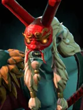
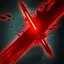

Stroke of Fate
BATTLECRY ABILITY: Activates on battle
Grimstroke paints an ink trail, reducing the attack speed and mana regeneration of enemies on hit.
| ★ | ★★ | ★★★ | |
|---|---|---|---|
| Radius | 160 | 180 | 200 |
| Duration | 8.0 | ||
| Attack speed reduction% | 10 | 20 | 40 |
| Mana regen reduction% | 10 | 20 | 40 |
| Cooldown (s) | 5 | ||
The corruptive force of Grimstrokes ink, drawn from the reservoir of his fallen people, consumes any enemy caught in its path.
Stats
| ★ | ★★ | ★★★ | |
|---|---|---|---|
| Health | 500 | 1000 | 2000 |
| Mana | 0 | 0 | 0 |
| Armor | 1 | 1 | 1 |
| Magic resistance | 0% | 0% | 0% |
| Attack damage | 40–60 | 80–120 | 160–240 |
| Attack interval (s) | 1.4 | 1.4 | 1.4 |
| Attack range | 400 | 400 | 400 |
| Move speed | 500 | 500 | 500 |
 Demon · Fel Power
Demon · Fel Power
- (1) Your Demons' attacks deal pure damage. Fel Power: +15% attack damage per stack, up to 7 stacks. A stack is each copy of that Demon on your board, counting itself. With 2+ Demon Hunters, stacks count all your Demons plus each enemy Demon Hunter.
 Wizard · Something from Nothing
Wizard · Something from Nothing
Enemies attack Wizards last: they count as low-priority targets.
- (2) Any other race/class level that needs 4 or more pieces is unlocked with one fewer, as long as you already have at least 3 (Demon excluded).
- (3) If exactly one non-Wizard race or class is active, all of its levels are unlocked.